認証機能付きの新規アプリケーションを ExpressWeb へ発行してみる
公開日：
ASP.net MVC 3 の新規アプリケーション（認証つき）を、Visual Studio 2010 から Web配置 で ExpressWeb へ発行してみたのだけど、やたら手間取ったので、備忘録としてメモしておく。
追記：データベースは SQL Server 2008 を使いました。メイド好きなヒト（「メイド MVC」でググれ）によると、SQL CE の方がよっぽど簡単とのこと。でも、SQL CE は格納できる文字数に制限があるのよねぇ......（4,000文字）
とりあえずデプロイする
とりあえず何も考えずに、新規アプリケーションを ExpressWeb へ発行してみる。
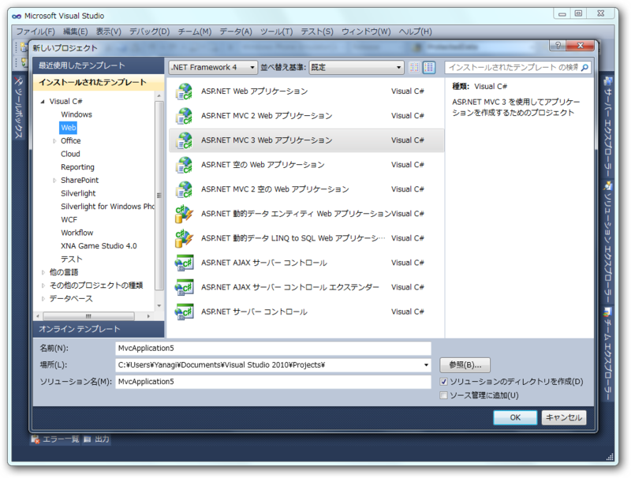
ASP.net MVC 3 アプリケーションを作成。何の変哲もないタダのWebサイトが現れる。
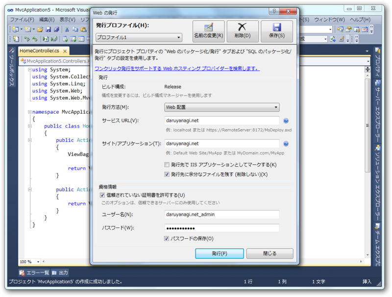
daruyanagi.net に発行するので、［サービス URL］［サイト/アプリケーション］欄に daruyanagi.net と記入。資格情報には、Webサイトのリモート管理のIDとパスを入力しておく。この時、［信頼しない証明書を許可する］にチェックを入れておくのを忘れずに。
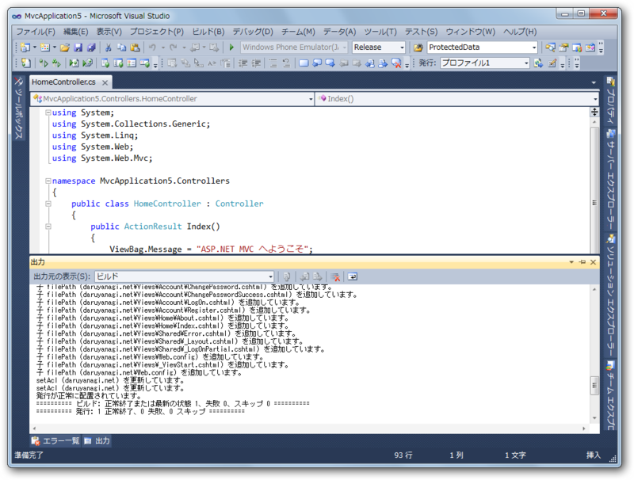
［発行］ボタンを押して暫し待つ。
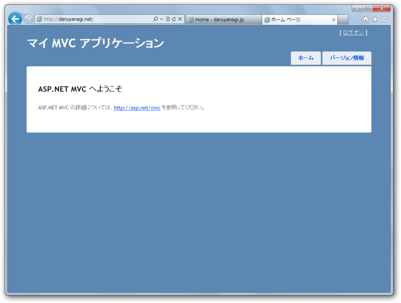
できた！
エラーの内容が表示されない
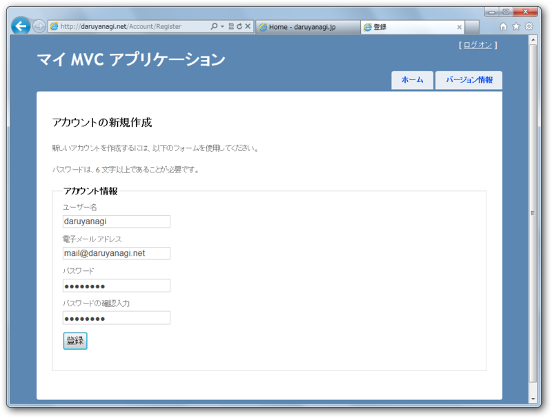
しかしこのままではログイン関係の機能が動かない。ユーザーの登録が行えない。
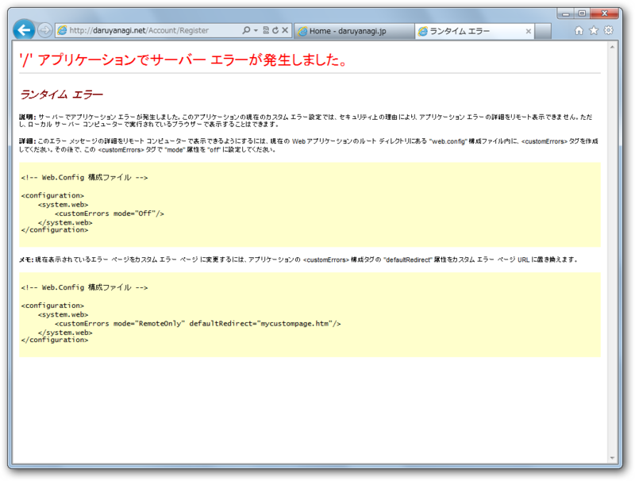
それどころか、エラーの内容が表示されない。
とりあえずエラーを特定しないことにはどうしようもないので、Web.confug にカスタムエラーを無効化する設定を記述。
： <system.web> <customErrors mode="Off"/> ：
もう一度発行して、ユーザーの登録画面でリロード。
フォルダに書き込み権限がない
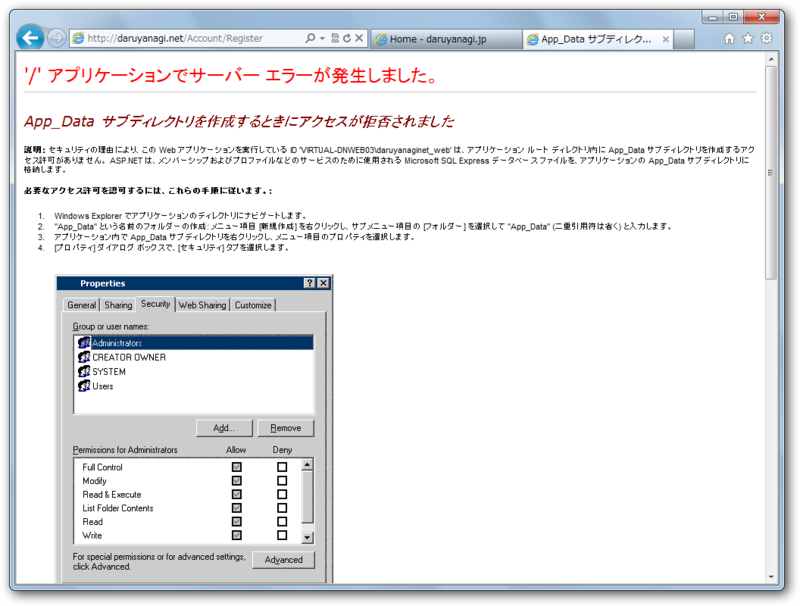
エラーの内容が表示された。
フォルダに書き込み権限がなかったため、App_Data フォルダが作成できなかったらしい。ファイルマネージャーで、/wwwroot いかに権限を与えて解決。
リロード。
データベースに接続できない
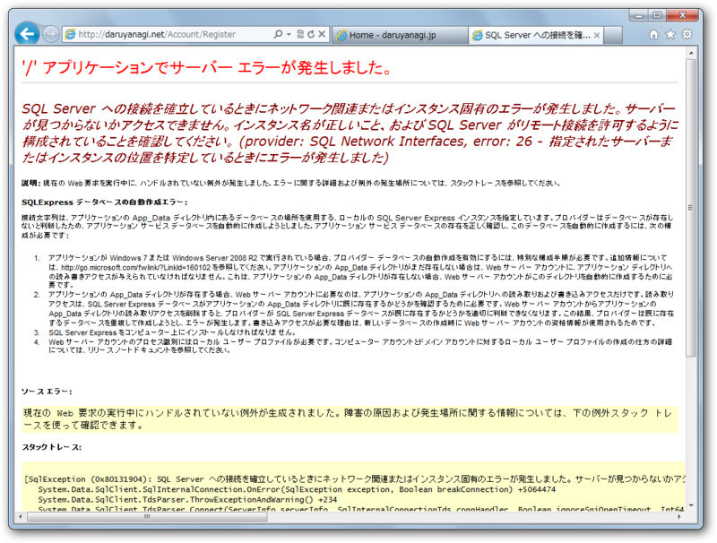
次はデータベースに接続できないようだ。
そりゃそうだ、ローカル用の設定だもの。 Web.confug.Release にリモート用の接続文字列を設定してやる。
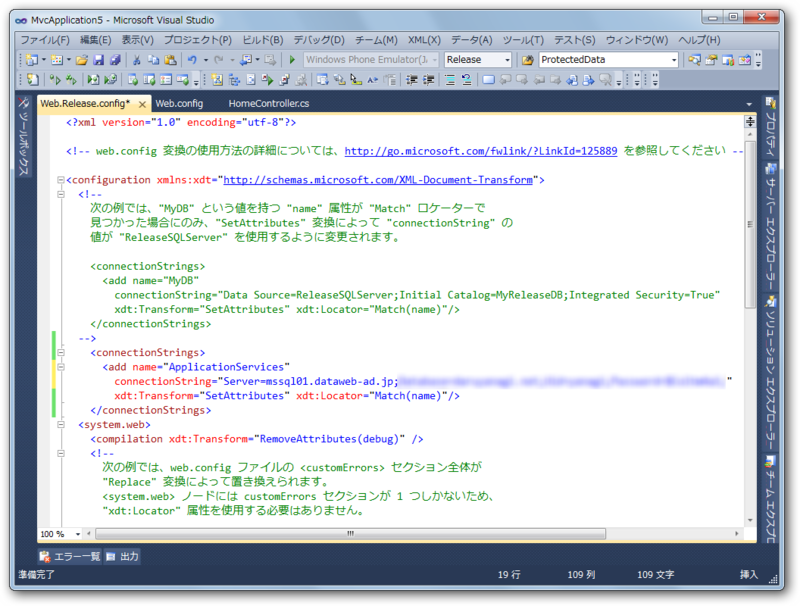
<configuration xmlns:xdt="http://schemas.microsoft.com/XML-Document-Transform"> <connectionStrings> <add name="ApplicationServices" connectionString="Server=mssql01.dataweb-ad.jp;***" xdt:Transform="SetAttributes" xdt:Locator="Match(name)"/> </connectionStrings> <system.web> ：
リロード。
資格情報を保存するデータベースに書き込みができない
スキーマがない
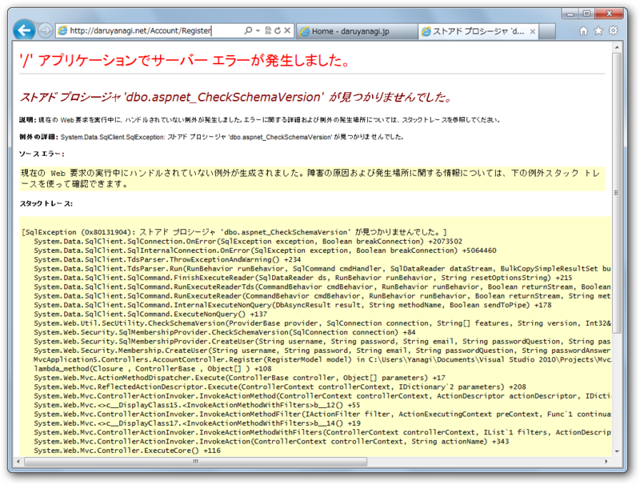
ストアドプロシージャがない！とな。
よくわからないので、リモートのデータベースの中身を見てみた。すっからかんだった！ どうにかしてデータを作成してあげないといけない。
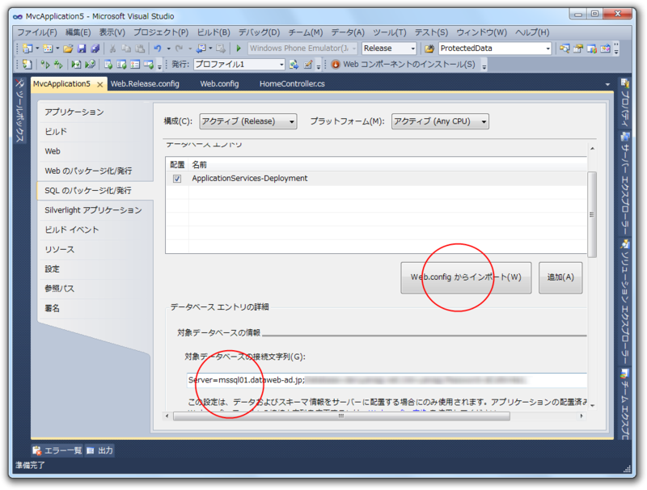
アプリケーションのプロパティ画面にある、［SQL のパッケージ化/発行］タブを開いて、［Web.configからインポート］ボタンを押す。すると、でろでろっと補完されるはずなので、［対象データベースの接続文字］欄にリモートデータベースの接続文字列を入れる。
＼デップローイ！／
データがない
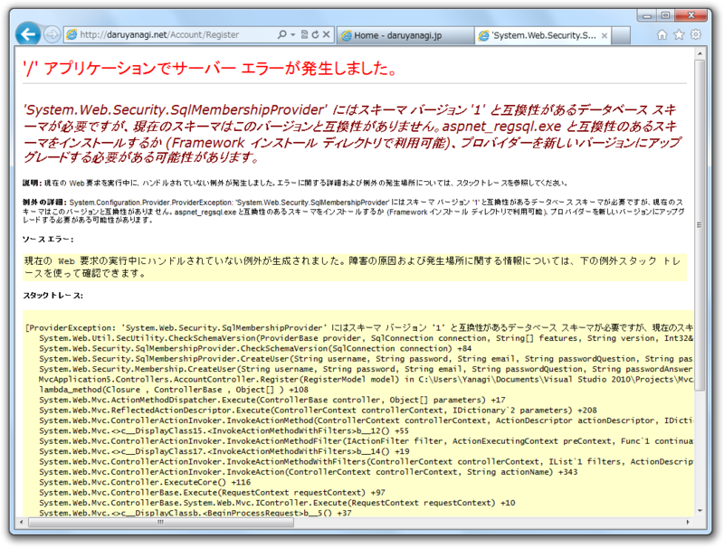
checkShemeVersion の値が1じゃないと言われる。色々解決策を教えてくれているけど、どれも正解ではない。
実はさきほど作ったのはスキーマのみで、データが入っていないということだったらしい。データも入れてあげればよう。
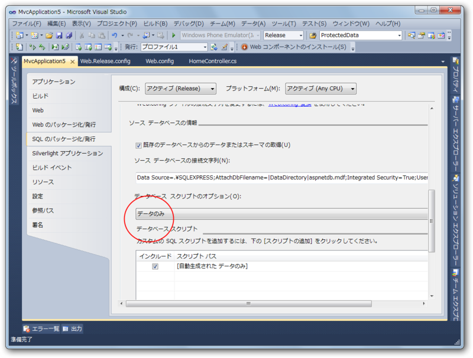
［データベーススクリプトのオプション］を［スキーマのみ］から［データのみ］に変更。ここをはじめから［スキーマとデータ］にしておけば、最後のエラーに悩まされずに済んだかもしれない。
（次回発行時には Web.config からインポートしたデータベースエントリの設定のチェックを外しておくこと。すでにあるスキーマを二十二作ろうとしてエラーが発生する）
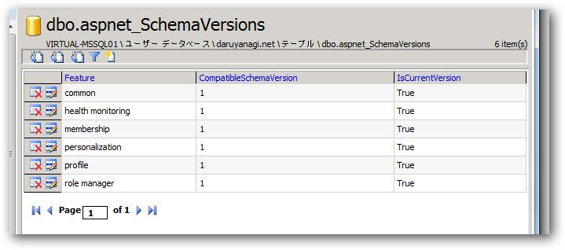
リモートでもちゃんとデータができてる！ 無事にユーザーの作成にも成功しました。めでたしめでたし。